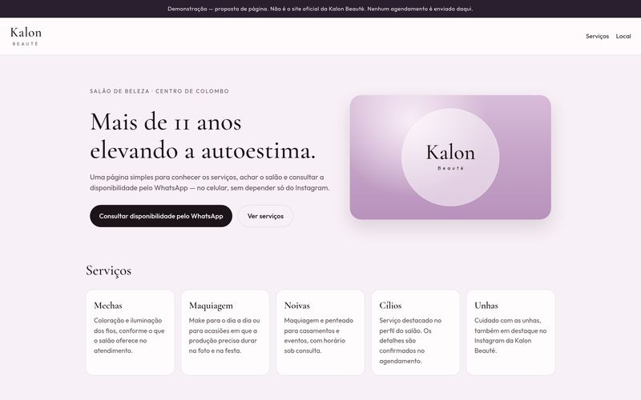
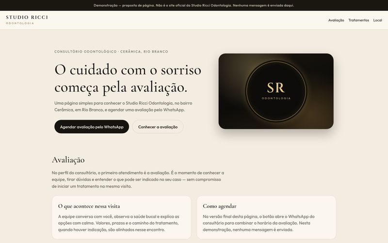
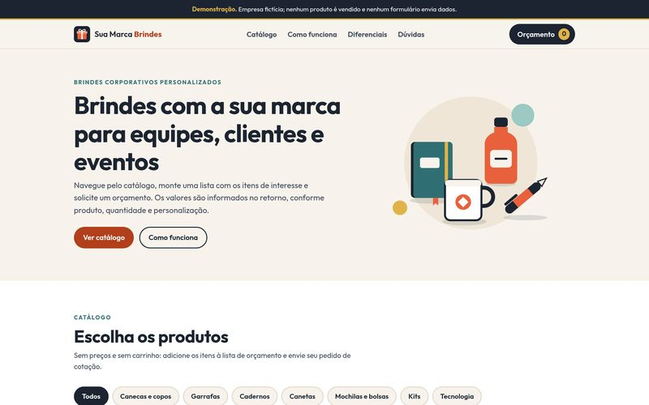
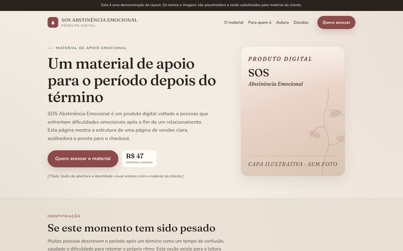
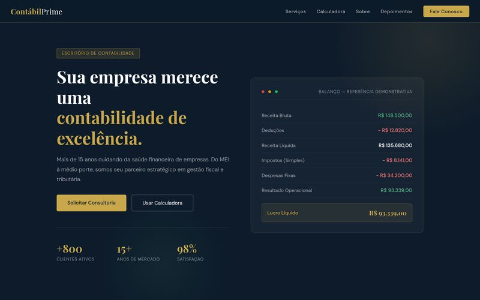

Landing page para salão de beleza
Página única, pensada para o celular, com serviços, localização e um convite para conversar pelo WhatsApp.
Marcos André
Eu crio páginas simples para salões, clínicas, lojas e serviços. O cliente entende o que você faz, encontra o endereço e fala com você no WhatsApp — sem site complicado.
Portfólio
Os trabalhos abaixo são demonstrações e projetos conceito, montados para apresentar uma proposta de página. Não são sites oficiais e não representam clientes contratados.

Página única, pensada para o celular, com serviços, localização e um convite para conversar pelo WhatsApp.

Página que explica a avaliação inicial, apresenta tratamentos e indica horário e local do consultório.

Catálogo sem preços e sem carrinho, com filtros por categoria e uma lista para pedir orçamento.

Estrutura de página de vendas com apresentação do material, para quem é e dúvidas, usando textos e imagens de exemplo.

Landing page para escritório de contabilidade, com lista de serviços, uma calculadora de exemplo e um convite para conversa.
Serviços
Uma página clara, rápida no celular e pronta para o cliente te chamar. Sem pacotes inflados e sem prazo eterno.
Uma landing page com o essencial: o que você faz, para quem é e como começar um atendimento.
A maior parte das visitas chega pelo telefone. A página é pensada para ler e clicar com conforto nessa tela.
O interessado fala com você no aplicativo que já usa, sem formulário complicado e sem esperar e-mail.
Quem prefere ir até o local encontra o endereço com facilidade e pode abrir a rota no mapa.
A página entra no ar com um link estável, rápida para abrir e simples de atualizar depois.
Com logo, fotos e textos em mãos, a página fica pronta em questão de dias, não de semanas.
Como trabalho
Você me conta o que oferece, para quem é a página e o que o visitante deve fazer: chamar no WhatsApp, pedir orçamento ou chegar até o local.
Você vê um rascunho navegável da página, no celular e no computador, e me diz o que ajustar antes da versão final.
Logo, fotos e os textos que podem aparecer no ar. Eu encaixo tudo na página, no lugar dos exemplos da demonstração.
Publico no Vercel e te entrego o link. Se você tiver um domínio, a página também pode apontar para ele.
Contato
Me chame no WhatsApp ou escreva um e-mail. Eu respondo com o próximo passo e, se fizer sentido, monto uma demonstração para o seu negócio.